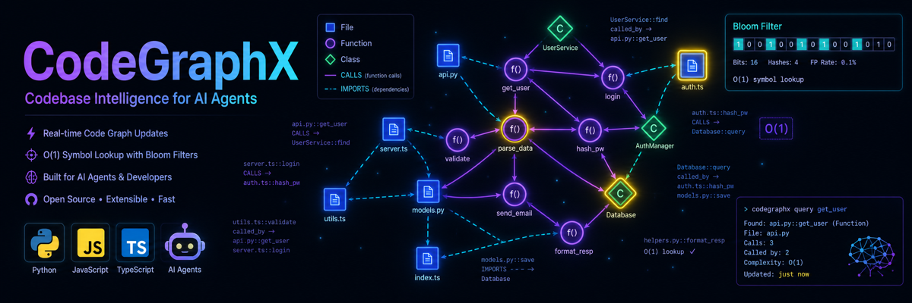

CodeGraphX (CGX)
A local, token-efficient codebase graph engine and MCP server for AI coding agents. Ask "what breaks if I change this function?" — get an exact answer in a few hundred tokens instead of reading 50 files.


What is CodeGraphX?
CodeGraphX (CGX) is a code intelligence layer: a persistent, queryable graph of your codebase's symbols (functions, classes, variables), their relationships (calls, called_by, imports, inherits, cross-language API_CALLS), and how they change over time.
It sits in the same family as a Language Server (LSP) or a code-search index, but it is purpose-built for LLM agents:
- A Language Server answers "go to definition" for an editor, one symbol at a time.
- A grep / embedding search finds text, not structure.
- CodeGraphX answers structural, whole-repo reasoning questions — impact / blast-radius, dependency cycles, cross-language contracts, "does this symbol even exist?" — and serializes the answer in a token-optimized form an agent drops straight into context.
The core problem it solves: AI coding agents burn most of their token budget re-discovering a codebase — opening files, scrolling, grepping, re-reading the same modules every session. CGX indexes once and answers those questions from a graph, so the agent spends tokens reasoning instead of scanning.
Quick start
# Install globally
npm install -g codegraphx
# Wire the MCP server + skill into your coding CLIs (Claude Code, Gemini CLI, …)
cgx setup
# Index your codebase (generates .codegraphx/ artifacts + .codegraphx.db)
cgx init
# Ask what breaks if you change a symbol
cgx impact validateInput --direction downstream --depth 5Requires Node.js ≥ 18. Everything runs locally — no account, no network, no telemetry.
Features
🧠 Symbol graph
Every function/class/method with calls, called_by, imports, inherits edges.
⚡ O(1) symbol lookup
A Bloom filter answers probable_yes / definite_no without touching the DB.
💥 Impact tracing
Recursive upstream (callers) / downstream (callees) blast-radius via a SQL CTE.
🌐 Cross-language links
Matches frontend fetch/axios calls to Express / Flask / FastAPI routes as confidence-scored API_CALLS edges.
🕑 Bi-temporal history
Append-only graph — every symbol and edge is versioned by commit, so you can query the codebase as of any point in time.
🔌 MCP server
Exposes the graph to Claude Code, Gemini CLI, Cursor, and any Model Context Protocol client.
Why it saves tokens
Every agent action has a token cost. Consider: "What will break if I change validateInput?"
| Approach | What the agent does | Rough context cost |
|---|---|---|
| Without CGX | Greps for validateInput, opens ~15–50 candidate files, reads each to trace call sites | tens of thousands of tokens |
| With CGX | explain_impact({ symbol_name: "validateInput" }) → one small answer of upstream callers + downstream callees | a few hundred tokens |
CGX serializes its graph in TOON (Token-Oriented Object Notation) — a compact tabular encoding that removes the repeated keys and braces that dominate JSON token counts.
MCP tools for AI agents
get_graph_status | Check whether a scan has been run. |
list_files | List indexed files, with an optional substring filter. |
check_symbol_exists | O(1) Bloom-filter lookup — probable_yes or definite_no. |
explain_impact | Upstream (who uses this) + downstream (what this breaks) for a symbol. |
verify_task | Given a task + commit hash, returns status, changes, and untested additions. |
get_session_diff | Structural summary of changes vs HEAD / branch. |
FAQ
What is CGX short for?
CGX is the short name for CodeGraphX, a codebase graph engine and MCP server for AI coding agents.
Is my code sent anywhere?
No. CGX is 100% local — no network, no telemetry, no cloud sync. Code is parsed, never executed, and CGX never modifies your source.
Does it work on large codebases?
Yes. Incremental parsing means unchanged files are served from cache; only changed files are re-parsed.
Which languages are supported?
Python, JavaScript, TypeScript, JSX/TSX, HTML, and CSS via Tree-sitter adapters. Cross-language API links cover React ⇄ Express / Flask / FastAPI.
Which AI agents can use it?
Any Model Context Protocol client — including Claude Code, Gemini CLI, Cursor, OpenCode, and Antigravity. Run cgx setup to wire them automatically.